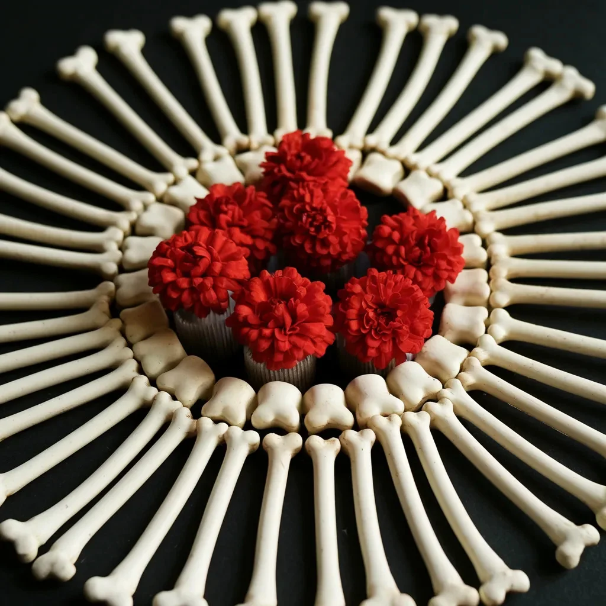

그가 나를 그리고 싶다고 했을 때, 그가 아무도 보지 못하는 나의 부분을 그리고 싶어한다는 것을 알지 못했다.
[When he asked to paint me, I didn’t realize he meant the parts of me that nobody sees.]
스튜디오의 공기는 테레빈유와 뭔가 더 달콤한 것 - 아마도 꿀이나 부패한 듯한 냄새로 무거웠다. 그의 붓들은 수술 도구처럼 줄지어 있었고, 붓털은 이전 작품들의 물감으로 얼룩져 있었다. 나는 수십 명의 화가들을 위해 포즈를 취해봤지만, 이런 식으로 앉아달라고 한 사람은 없었다: 옷을 완전히 입은 채로, 등은 앞으로 구부리고, 마치 기도하는 것처럼 고개를 숙인 채로.
[The studio air hung thick with turpentine and something sweeter - maybe honey, maybe decay. His brushes lined up like surgical tools, their bristles stained with previous works. I’d posed for dozens of artists before, but none had asked me to sit quite like this: fully clothed, spine curved forward, head bowed as if in prayer.]
“움직이지 마세요,” 내가 움직이지도 않았는데 그가 속삭였다. 캔버스 위를 긁는 목탄 소리가 마치 뼈를 긁는 손톱 소리처럼 울렸다. “당신을 꿰뚫어 봐야 해요.”
[“Stay still,” he whispered, though I hadn’t moved. The scratch of charcoal against canvas echoed like fingernails on bone. “I need to see through you.”]
매 세션마다 또 다른 층이 벗겨져 나갔다. 처음에는 눈물처럼 흘러내릴 만큼 얇은 수채화로 내 피부를 그렸다. 그다음은 유화로 연구를 했다: 근육, 힘줄, 그리고 그 아래 혈관의 섬세한 구조까지. 그는 해부학을 마치 연인이 손길을 아는 것처럼 알고 있었다 - 모든 능선, 움푹 패인 곳, 관절 사이의 비밀스러운 공간까지.
[Each session peeled away another layer. First, he painted my skin in watercolors so thin they ran like tears. Then came studies in oil: muscles, tendons, the delicate architecture of vessels beneath. He knew anatomy like a lover knows touch - every ridge, every hollow, every secret space between joints.]
“여기가 아름답군요,” 그는 내 손목, 목, 갈비뼈 아래 움푹 패인 곳을 손가락으로 누르며 말했다. “당신의 골격이 모든 것을 함께 붙들고 있는 방식이.”
[“You’re beautiful here,” he’d say, pressing a finger against my wrist, my throat, the hollow beneath my ribs. “The way your frame holds everything together.”]
나는 흰색과 붉은색으로 꿈을 꾸기 시작했다. 잠든 동안, 나는 그의 붓질을 안쪽에서 느낄 수 있었고, 골수를 걸작으로 그려내고 있었다. 미술 학원의 다른 모델들은 더 이상 나에게 커피를 마시자고 하지 않았다. 아마도 그들은 내 얼굴에서 무언가를 봤을 것이다 - 내가 점점 더 사람이 아닌 캔버스가 되어가는 모습을.
[I started dreaming in whites and reds. In my sleep, I’d feel his brush strokes from the inside, painting marrow into masterpiece. The other models at the academy stopped asking me to coffee. Maybe they saw something in my face - the way I was becoming more canvas than person.]
그의 마지막 작품은 몇 주가 걸렸다. 그가 작업하는 동안 나는 몇 시간씩 앉아있었고, 그의 숨소리는 젖은 물감이 미끄러지는 소리와 뒤섞였다. 가끔 그가 나를 보는 것이 아니라, 마치 내 살이 유리가 된 것처럼 나를 통과해서 보고 있는 것을 발견했다.
[His final piece took weeks. I sat for hours while he worked, the sound of his breathing mixing with the wet slide of paint. Sometimes I caught him staring not at me, but through me, as if my flesh had become glass.]
“거의 다 됐어요,” 그는 중얼거렸지만, 캔버스는 결코 채워지는 것 같지 않았다.
[“Almost done,” he’d murmur, though the canvas never seemed to fill.]
전시회 개막식에는 사람들이 몰려들었다. 그들은 마치 장례식장의 조문객들처럼 그의 그림 주위를 돌았다 - 조용한 목소리, 조심스러운 발걸음으로. 나는 구석에 단단하고 실체가 있는 모습으로 서서, 그들이 내 해체된 이미지를 연구하는 것을 지켜보았다. 층층이, 그림마다, 그는 나를 본질적 진실로 벗겨냈다: 칼슘과 콜라겐, 골질과 인산염으로.
[The exhibition opening drew crowds. They circled his paintings like mourners at a wake - hushed voices, careful steps. I stood in the corner, solid and substantial, watching them study images of my dissolution. Layer by layer, painting by painting, he’d stripped me down to essential truths: calcium and collagen, ossein and phosphate.]
중심작품은 맞은편 벽에 홀로 걸려 있었다. 그 안에서 내 해골이 춤을 추고 있었고, 모든 뼈는 사랑스러운 디테일로 표현되어 있었으며, 근육이었을 수도 있고 기억이었을 수도 있는 그림자로 감싸여 있었다. 하지만 거기, 늑골 안에는, 그가 뭔가 특별한 것을 그려 넣었다 - 내 뼈 사이에서 피어나는 작은 붉은 꽃들의 정원을.
[The centerpiece hung alone on the far wall. In it, my skeleton danced, every bone rendered in loving detail, wrapped in shadows that might have been muscle, might have been memory. But there, in the ribcage, he’d painted something extra - a garden of tiny red flowers, blooming between my bones.]
“이제 보이나요?” 그가 내 옆에 나타나며 물었다. 몇 달 만에 처음으로 그의 손가락에는 물감이 묻어있지 않았다. “당신의 진정한 모습이?”
[“You see it now?” he asked, appearing beside me. His fingers were clean of paint for the first time in months. “What you really are?”]
나는 가슴을 만져보았다, 뼈에 부딪히는 심장의 규칙적인 고동을 느끼며. “네,” 내가 말했다. “저는 여전히 여기 있어요.”
[I touched my chest, feeling the steady drum of my heart against bone. “Yes,” I said. “I’m still here.”]
그는 슬프고도 만족스러운 미소를 지었다. “그게 바로 제가 담아내지 못한 거예요. 모든 것에도 불구하고 당신이 자신을 지켜내는 방식. 꽃들은 어쨌든 피어나는 거죠.”
[He smiled, sad and satisfied. “That’s what I couldn’t capture. The way you keep yourself together, despite everything. The flowers grow anyway.”]
나는 그날 밤 갤러리를 떠났다, 피부로 감싸인 내 골격과 함께, 그가 그려낸 나의 내면의 정원을 간직한 채로. 가끔, 특정한 빛 아래에서는, 그 붉은 꽃들이 안에서부터 내 피부를 밀어내며 태양을 향해 뻗어나가는 것이 보이는 것 같다.
[I left the gallery that night, my skeleton wrapped in skin, carrying his vision of my interior garden. Sometimes, in certain lights, I swear I can see those red blooms pressing against my skin from within, reaching for the sun.]